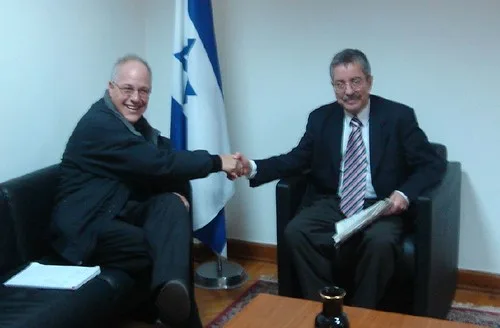

이재명 대통령, 브라질 국빈 방문 시작…룰라 대통령과 정상외교
이재명 대통령이 26일 브라질리아에 도착하며 나흘간의 브라질 국빈 방문 일정에 들어갔다. 룰라 다 시우바 브라질 대통령의 초청으로 성사된 이번 방문은 이 대통령이 지난 24일 미국과 남미 3개국, 독일을 잇는 7박11일 순방길에 오른 뒤 두 번째로 찾는 나라다. 이 대통령은 이날 오후 룰라 대통령 내외가 주최하는 환영 리셉션에 참석하며 국빈방문 일정을 공식적으로 시작했다.
양국 정상은 앞서 지난 6월 룰라 대통령이 21년 만에 한국을 국빈 방문하며 이미 한 차례 마주한 바 있다. 당시 방한을 계기로 두 정상은 경제·안보 분야 협력을 강화하기로 뜻을 모았고, 이번 이 대통령의 브라질 방문은 그 후속 조치 성격을 띤다는 평가가 나온다. 외교가에서는 이번 순방이 남미 최대 경제국인 브라질과의 관계를 한 단계 끌어올리는 계기가 될 수 있을지 주목하고 있다. 특히 정상 간 상호 방문이 1년 안에 이뤄진 것 자체가 이례적이라는 평가도 나오는데, 그만큼 양국 정부가 이번 협력 관계를 실질적인 성과로 이어가겠다는 의지를 보여주는 대목으로 해석된다.

공식 일정은 27일 본격화한다. 이 대통령은 이날 오전 공식 환영식에 참석한 뒤, 대통령 관저인 '아우보라다 궁'에서 룰라 대통령과 정상회담을 갖는다. 회담 후에는 양국 간 협력 양해각서(MOU) 서명식과 공동언론발표, 국빈오찬이 이어질 예정이다. 정상회담에서는 통상·자원·인프라 등 여러 분야의 협력 방안이 폭넓게 논의될 것으로 알려졌다. 브라질은 농산물과 광물자원이 풍부한 나라인 동시에 남미 최대 내수시장을 보유하고 있어, 우리 정부는 이번 회담을 통해 자원 협력과 산업 공급망 다변화 방안을 함께 모색한다는 계획이다.
공식 일정을 마친 이 대통령은 상파울루로 이동해 28일 동포 오찬간담회와 '한-브라질 비즈니스 라운드테이블'을 잇달아 주재한다. 브라질은 남미 최대 규모의 한인 동포 사회가 있는 곳 중 하나로, 현지 동포들과의 간담회는 이 대통령의 순방 일정에서 상징적 의미를 갖는 자리로 꼽힌다. 비즈니스 라운드테이블에는 국내 주요 기업 관계자들이 동행해 현지 진출 확대 방안을 논의할 것으로 예상된다. 상파울루는 브라질의 경제 수도로 불릴 만큼 산업과 금융이 집중된 도시인 만큼, 이곳에서 열리는 행사는 이번 순방의 경제적 성과를 가늠하는 시험대가 될 전망이다.

이번 브라질 방문은 이 대통령의 7박11일 순방 일정 중 두 번째 기착지다. 앞서 미국에서는 실리콘밸리를 찾아 엔비디아 젠슨 황, 오픈AI 샘 알트만 등 글로벌 빅테크 최고경영자들과 잇달아 회동하며 AI 협력 확대 방안을 논의했고, 이재용 삼성전자 회장과 최태원 SK그룹 회장 등 국내 대기업 총수들도 이 자리에 동행했다. 브라질 일정을 마친 뒤에는 칠레, 아르헨티나로 이동해 각각 정상회담을 갖고, 순방 마지막에는 독일 프랑크푸르트에서 동포 간담회에 참석할 예정이다.
정부는 이번 순방을 통해 미국을 중심으로 한 첨단산업 협력과 함께, 글로벌 사우스로 분류되는 남미 국가들과의 실용 외교를 동시에 추진한다는 방침이다. 특히 브라질, 칠레, 아르헨티나는 각각 자원과 신흥시장으로서의 잠재력을 지니고 있어, 정부는 이번 순방이 자원 공급망 다변화와 신규 수출시장 개척의 계기가 되기를 기대하고 있다. 이 대통령은 남미 3국 순방을 마친 뒤 오는 8월 2일 프랑크푸르트 동포 간담회를 끝으로 귀국길에 오를 예정이다.
정치권과 재계에서는 이번 순방의 성과가 향후 정부의 외교·통상 정책 방향을 가늠하는 잣대가 될 것이라는 전망도 나온다. 미국에서의 첨단산업 협력 성과와 남미에서의 자원·시장 협력 성과가 구체화되느냐에 따라, 실용 외교 노선의 성패가 갈릴 수 있다는 분석이다.